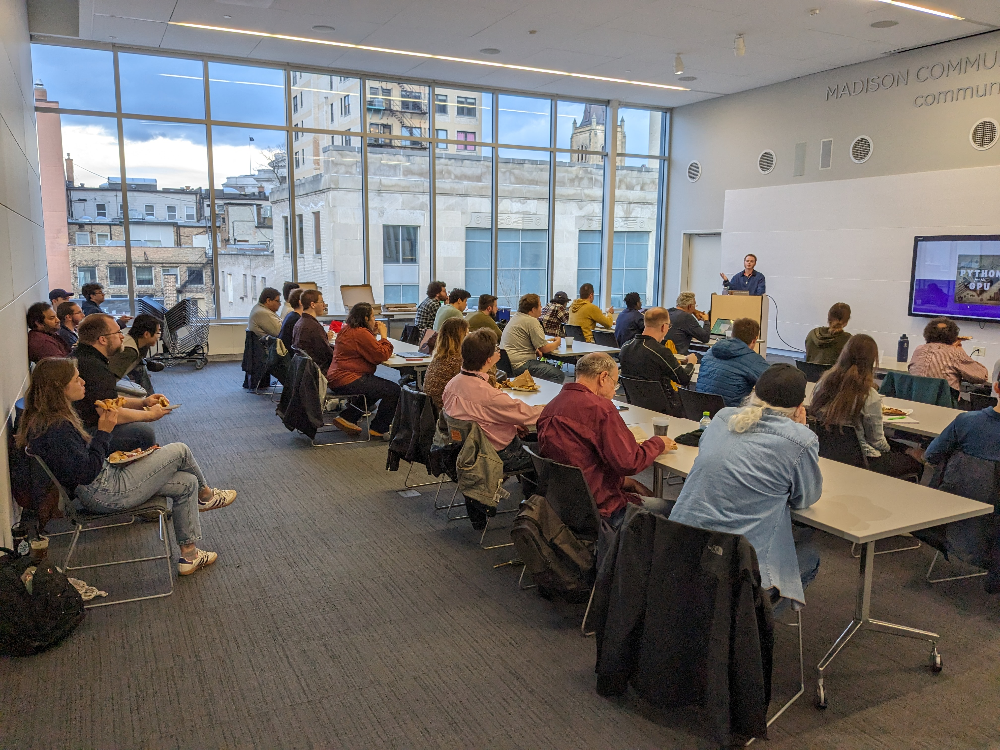

Slides from Joe's talk:
Graphical Processing Units (GPU's) are useful for solving parallel problems. Until recently, your poorly-optimized CPU code would probably finish before you understand CUDA C and GPU hardware. However, it's now 2024, and there is no reason to learn these things if you can write something fast enough in python! Using basic financial models as an example, we will use the numba library in python to execute code on the GPU (no CUDA C required). We will learn a bit about the history of GPU programming, when they are useful and how to utilize them in your python applications.
Joe Farchione is an Actuary and quantitative finance developer. He currently works on financial models and systems for hedging life and annuity insurance products.